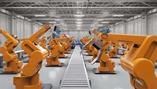

Robôs na Industria
1. O que são os cobots?
Os robôs colaborativos (cobots) representam o avanço da automação industrial, permitindo que humanos e robôs trabalhem no mesmo espaço sem barreiras de segurança. Equipados com sensores que detectam a presença humana, eles podem interromper seus movimentos instantaneamente para evitar acidentes, tornando a interação homem-máquina mais fluida, segura e eficiente. Além disso, são flexíveis, economicamente viáveis, de fácil programação e simples de mover, o que possibilita sua adoção até em pequenas e médias empresas.
2. O que são os robôs industriais?
Já os robôs industriais tradicionais são máquinas reprogramáveis e multifuncionais, capazes de manipular materiais e ferramentas com alta precisão e segurança. Com braços articulados e múltiplos graus de liberdade, eles executam tarefas complexas, sendo muito utilizados em setores como automotivo, metalmecânico e eletrônico. A história dos robôs industriais começou em 1961, com o UNIMATE da Unimation, e hoje mais de 700.000 unidades estão em operação no mundo.
A programação dos robôs pode ser feita via computador, linguagens específicas ou métodos alternativos como o modo playback, em que o operador “ensina” o robô a executar movimentos manualmente. Outras formas incluem comandos de voz, interfaces gráficas e realidade virtual, garantindo adaptabilidade às necessidades das indústrias.
3. Programação dos Robôs:
Em termos de geometria e movimento, os robôs possuem de 3 a 6 eixos, acionados por atuadores que convertem energia elétrica, hidráulica ou pneumática em movimento mecânico. Essa estrutura permite movimentos lineares ou rotacionais, ampliando a flexibilidade para tarefas complexas. As principais classes de robôs incluem: Cartesianas, Cilíndricas, Polares, Articuladas (Revolução) e SCARA, cada uma com características próprias de alcance, precisão e aplicação.
4. Aplicações dos Robôs:
Quanto às aplicações, os robôs atuam em diversos setores: montagem, soldagem, pintura e inspeção na indústria automotiva; corte e manuseio de materiais na metalmecânica; montagem de circuitos na eletrônica; embalagem e paletização no alimentício; procedimentos cirúrgicos e reabilitação na saúde; além de logística, construção e segurança. No Brasil, os cobots são amplamente usados em soldagem (33%), manipulação de materiais (25%), soldagem por arco (18%) e pintura (10%).
5. Vantagens dos Robôs:
Entre suas vantagens, destacam-se segurança, flexibilidade, facilidade de programação, viabilidade econômica e operação contínua. Já as desvantagens incluem capacidade de carga menor e movimentos mais lentos, que são necessários para garantir a segurança e a colaboração eficaz com humanos. Uma má divisão das atividades entre humano e robô também pode reduzir a eficiência do processo.